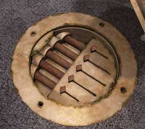

| 概要 | 地図 |
| 淡いヒント集 | ヒント集 | 的確なヒント集 |
| 攻略最短ルート |
| 場所選択に戻る |
雪山
 雪に埋もれたオスカーを引っ張り出す 機関車の車内へ行き、「油差し」を入手 オスカーに対し、「油差し」を使う 車内へ移動する (ムービー) 操縦室へ行き、オスカーと話す  貴重品室へ移動し、オスカーに電話をする 全ての棒を引っ込めるように、レバーを操作する (ムービー) 機関車が移動する |
| 場所選択に戻る |
| 概要 | 地図 |
| 淡いヒント集 | ヒント集 | 的確なヒント集 |
| 攻略最短ルート |
Syberia II
| 目次へ戻る | ページの上部へ |